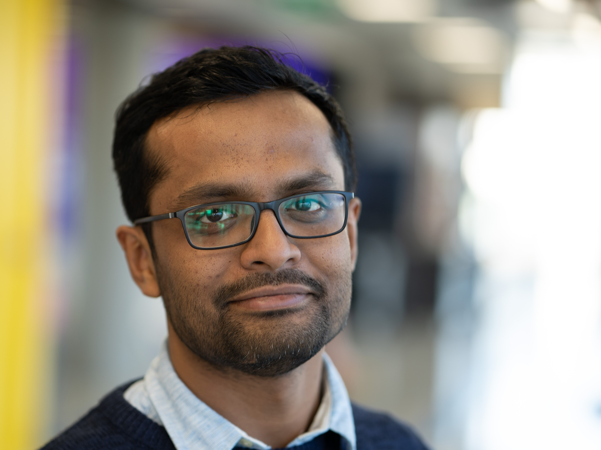

About Me
I am a Lead AI/ML engineer in Mastercard, training and deploying ML models at scale. Previously, I worked for Accenture as a research scientist.
I have a background in Computer Vison and Natural Language Processing.
I hold a PhD in Computer Science from Trinity College Dublin, and a research masters from IIIT Hyderabad, India.
Publications
- Harnessing Business and Media Insights with Large Language Models. Bao Y, Shah AP, Narang N, Rivers J, Maksey R, Guan L, Barrere LN, Evenson S, Basole R, Miao C, Mehta A., arXiv preprint arXiv:2406.06559. 2024 Jun 2.
- Jointformer: Single-Frame Lifting Transformer with Error Prediction and Refinement for 3D Human Pose Estimation, Sebastian Lutz, R. Blythman, Koustav Ghosal, Matthew Moynihan, C. Simms, A. Smolic, Computer Science, International Conference on Pattern Recognition, 7 August 2022
- Image Aesthetics Assessment Using Graph Attention Network, Koustav Ghosal, A. Smolic, Computer Science International Conference on Pattern Recognition, 26 June 2022
- Frequency-domain loss function for deep exposure correction of dark images, Ojasvi Yadav, Koustav Ghosal, Sebastian Lutz, A. Smolic, Computer Science Signal, Image and Video Processing, 22 April 2021
- Understanding the Geometry of Photographic images using Deep Learning, Sarvani Chakrabarty, A. Smolic, Koustav Ghosal, Geology, 2020
- A Geometry-Sensitive Approach for Photographic Style Classification, Koustav Ghosal, Mukta Prasad, A. Smolic, Computer Science Irish Machine Vision and Image Processing Conference, 3 September 2019
- Aesthetic Image Captioning From Weakly-Labelled Photographs, Koustav Ghosal, A. Rana, A. Smolic, Computer Science IEEE/CVF International Conference on Computer Vision (ICCV), 29 August 2019
- STaDA: Style Transfer as Data Augmentation, Xu Zheng, Tejo Chalasani, Koustav Ghosal, Sebastian Lutz, A. Smolic, Computer Science VISIGRAPP, 25 February 2019
- A Sketch-based Approach for Multimedia Retrieval, Koustav Ghosal, A. Namboodiri, Computer Science 2016,
- Learning clustered sub-spaces for sketch-based image retrieval, Koustav Ghosal, Ameya Prabhu, Riddhiman Dasgupta, A. Namboodiri, Computer Science, Asian Conference on Pattern Recognition, 1 November 2015
- A Sketch-Based Approach To Video Retrieval Using Qualitative Features, Koustav Ghosal, A. Namboodiri, Computer Science Indian Conference on Computer Vision, Graphics…, 14 December 2014
- Learnability in Audio-Spatial Working Memory, Sanchit Aggarwal, Koustav Ghosal, Pulkit Singhal, Priyanka Srivastava, Psychology, 2014
Contact
mail.koustavghosal@gmail.com